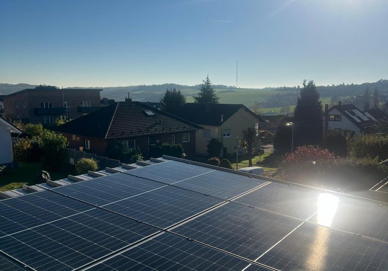
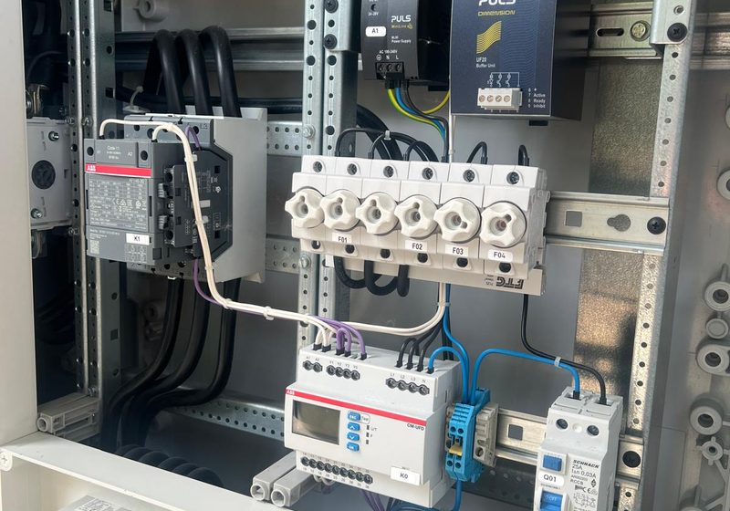
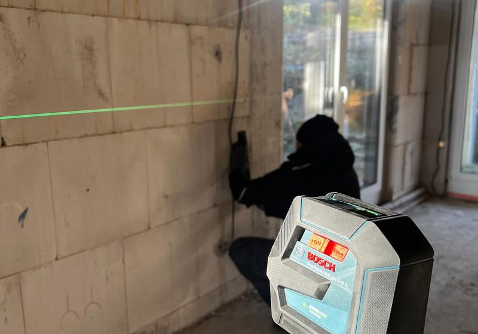
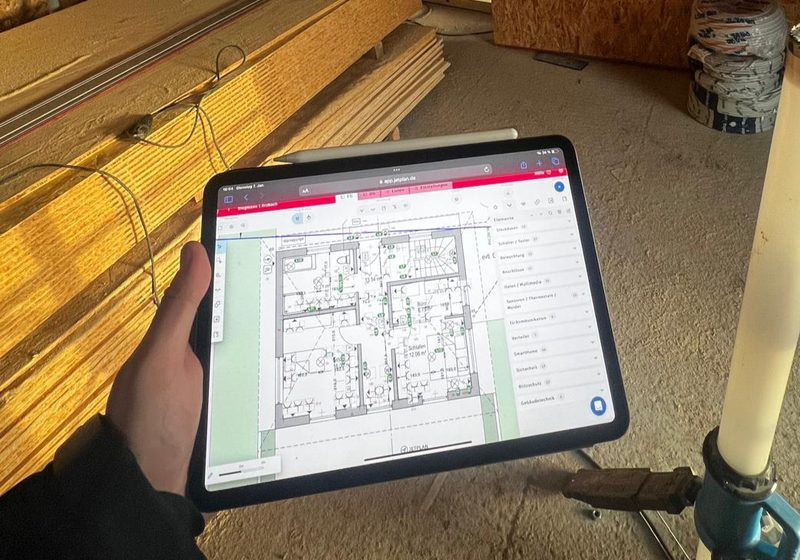

Photovoltaik
Maßgeschneiderte PV-Anlagen für Ihr Dach – mit hochwertigen Markenmodulen und langer Garantie.
Ihr Elektro- & Solar-Fachbetrieb für Darmstadt
Beratung, Planung und Montage Ihrer Photovoltaikanlage mit Stromspeicher und Wallbox – persönlich vor Ort in Darmstadt und im Rhein-Main-Gebiet.
Ihre Vorteile
durch Eigenverbrauch Ihres selbst erzeugten Solarstroms.
von steigenden Strompreisen und Netzbetreibern.
Ihrer Immobilie in Darmstadt durch moderne Energietechnik.
über den KfW-Kredit 270 – wir beraten Sie dazu.
jede Anlage spart mehrere Tonnen CO₂ pro Jahr.
mit Stromspeicher und Wallbox für Ihr E-Auto.
Leistungen in Darmstadt

Maßgeschneiderte PV-Anlagen für Ihr Dach – mit hochwertigen Markenmodulen und langer Garantie.

Speicherlösungen und komplette Elektroinstallation vom Meisterbetrieb – sicher und normgerecht.

Laden Sie Ihr E-Auto mit eigenem Solarstrom – Wallbox-Installation inklusive.

Von der Dachprüfung bis zur Inbetriebnahme – alles durch unser eigenes Fachteam.
In 4 Schritten zur Solaranlage
Kostenloses Erstgespräch und Analyse Ihres Stromverbrauchs und Dachs.
Individuelle Auslegung von Modulen, Speicher und Wechselrichter.
Installation durch unser Fachteam – meist in 1–2 Tagen erledigt.
Netzanmeldung, Anmeldung im Marktstammdatenregister, Übergabe.
Wirtschaftlichkeit
So könnte sich eine typische 10-kWp-Anlage mit Speicher rechnen:
| Kennzahl | Beispielwert |
|---|---|
| Anlagenleistung | 10 kWp + 10 kWh Speicher |
| Jahresertrag in Darmstadt | ca. 10.000–10.500 kWh |
| Eigenverbrauchsquote mit Speicher | bis zu 70 % |
| Eingesparte Stromkosten / Jahr | ca. 1.500–2.000 € |
| Amortisationszeit | ca. 9–13 Jahre |
Beispielhafte Richtwerte. Ihr konkretes Ergebnis ermitteln wir in der kostenlosen Beratung.
Warum Solis Energie
Als Elektro-Fachbetrieb mit Sitz in Bischofsheim sind wir in der gesamten Rhein-Main-Region zuhause – von Darmstadt über Groß-Gerau und Rüsselsheim bis Frankfurt. Wir kennen die Dächer, Netzbetreiber und Gegebenheiten vor Ort und sind auch nach der Installation persönlich für Sie erreichbar – keine anonyme Hotline, sondern ein fester Ansprechpartner.
Weil wir Photovoltaik und Elektrotechnik aus einer Hand anbieten, bekommen Sie alles vom selben Team: Anlage, Speicher, Wallbox und Elektroinstallation – sauber aufeinander abgestimmt.
Förderung
Der zinsgünstige KfW-Kredit 270 finanziert Ihre Solaranlage in Darmstadt – der Unterschied auf einen Blick:
Das sagen Kunden
„Junges, technisch versiertes und sehr flexibles Unternehmen. Die Anlage von Solis Energie war auf meinen Bedarf ausgelegt und hat sich an meinen Wünschen orientiert. Ich habe ein Terrassendach mit Photovoltaik belegen lassen – bei den meisten Anbietern war ich da schon raus, weil es zu individuell war. Die Komponenten sind hochwertig, die Verkabelung mit Reserve ausgelegt, sogar ein Blitzschutz wurde eingebaut. Als der Logistiker Module beschädigte, hat Solis stundenlang neue besorgt und trotzdem fertig montiert. Sehr zufrieden!"
„Junges dynamisches Unternehmen, sehr lösungsorientiertes Arbeiten, saubere & ordentliche Montage/Installation. Schnell & zuverlässig. Nur zu empfehlen!"
„Während des gesamten Prozesses waren sie immer verfügbar, um meine Fragen zu beantworten. Ihr Team zeigte nicht nur Professionalität und Fachwissen, sondern auch eine bemerkenswerte Kundenorientierung. Diese Kombination aus erstklassigem Service und Engagement macht Solis Energie zu meiner ersten Wahl für zukünftige Projekte."
„Es hat sich gezeigt, dass hier echte Fachkompetenz vorhanden ist. Die Beratung war sehr transparent. Die Installation verlief reibungslos und professionell. Können wir nur weiterempfehlen!"
„Schnelle Installation. Alles lief auf Anhieb. Sehr zu empfehlen."
Einsatzgebiet
Wir installieren Ihre Solaranlage in Darmstadt und im gesamten Rhein-Main-Gebiet – persönlich und mit kurzen Wegen vor Ort:
Ihr Ort ist nicht dabei? Fragen Sie einfach an – wir sind im gesamten Großraum für Sie da.
Häufige Fragen
Wir beraten Sie kostenlos und unverbindlich zu Ihrer Photovoltaik in Darmstadt.
Kostenlose Beratung
Füllen Sie das Formular aus – wir melden uns umgehend für Ihr persönliches Beratungsgespräch zur Photovoltaik in Darmstadt.
Mehr von Solis Energie